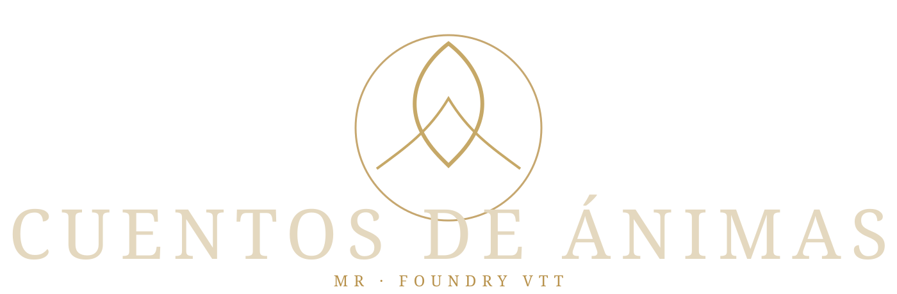
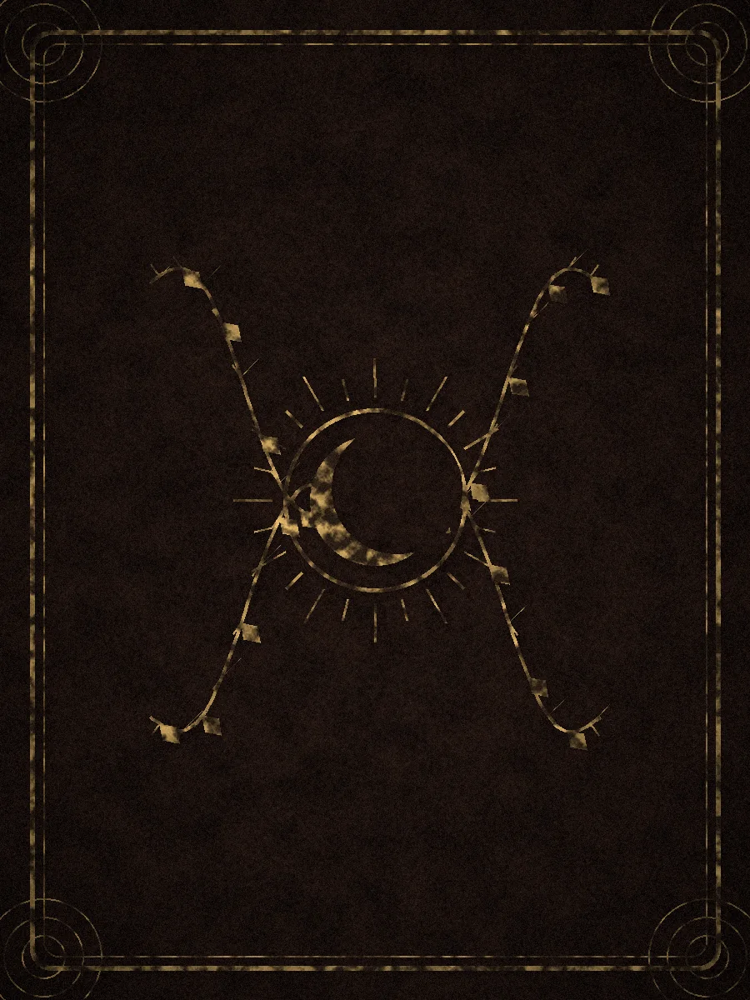

Mesa de Ánimas
Mazo, revelación, Damas Grises y recursos conviven en una mesa ritual propia.

Una mesa digital de horror íntimo y sobrenatural para Foundry VTT. Cartas, piedras rituales, recuerdos, contradicciones y tres presencias que anuncian el final.
Mazo, revelación, Damas Grises y recursos conviven en una mesa ritual propia.
Verdades, contradicciones y recuerdos convierten la intimidad entre Guardián y protagonista en mecánica.
Escala de texto, alto contraste, lectura limpia, reducción de movimiento y ayuda contextual.
Cartas, seguridad, efectos, sonidos y diario funcionan de forma autónoma.
El sistema trata las mecánicas como objetos físicos: Espíritu es piedra lunar; Determinación, ámbar cálido. Las cartas usan el backend nativo de Foundry, pero jamás obligan a jugar desde su interfaz estándar.
La v1.0 incluye dos escenarios originales y un editor completo para escribir los tuyos.
